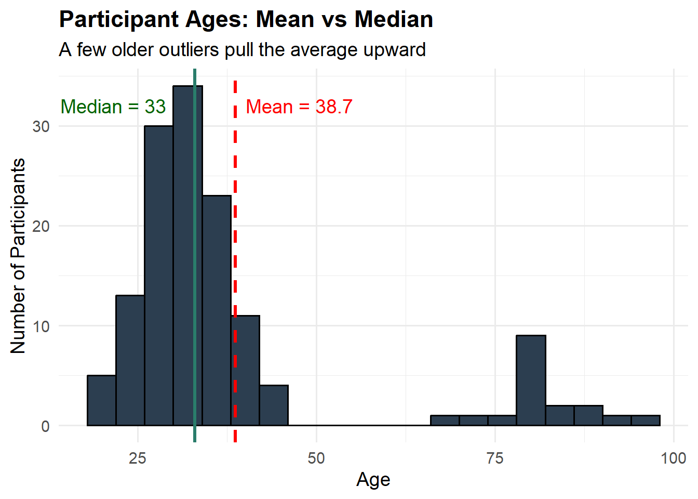
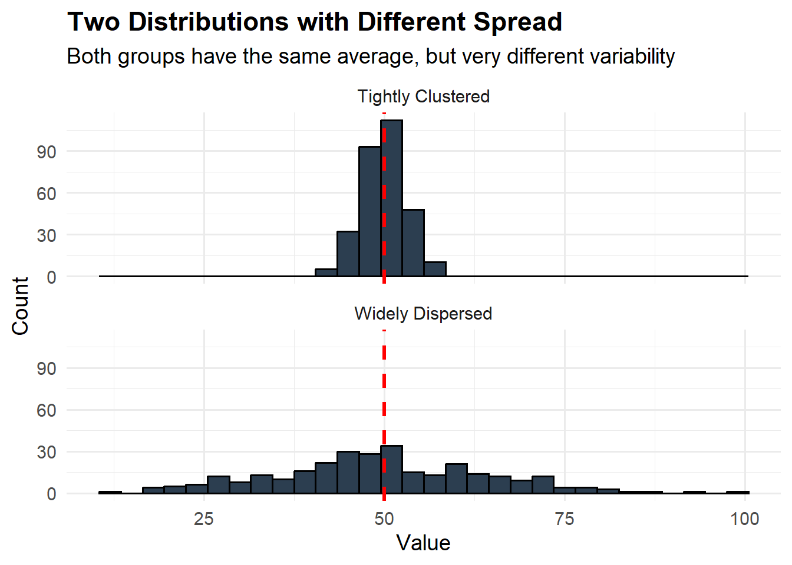
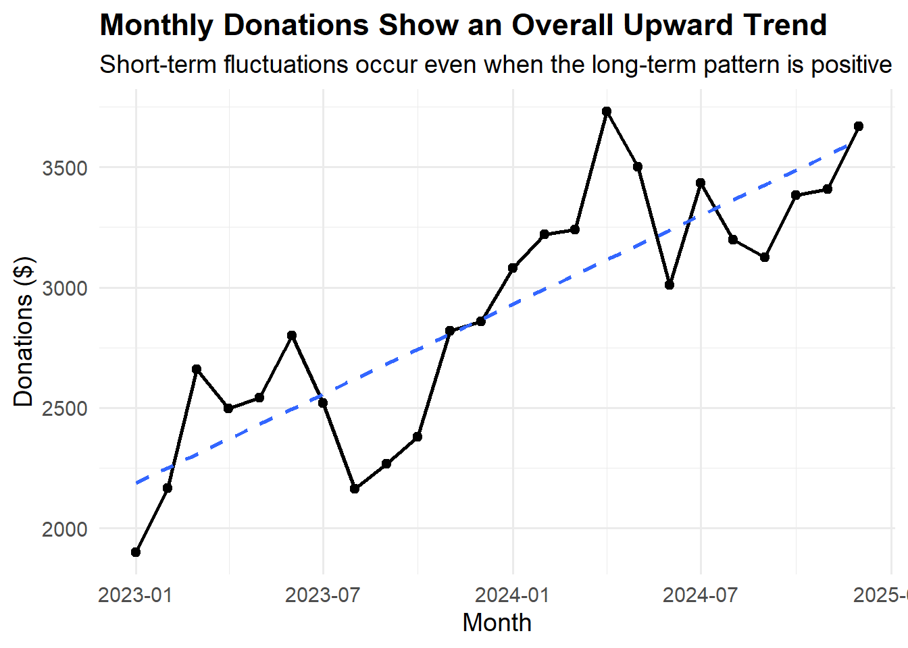
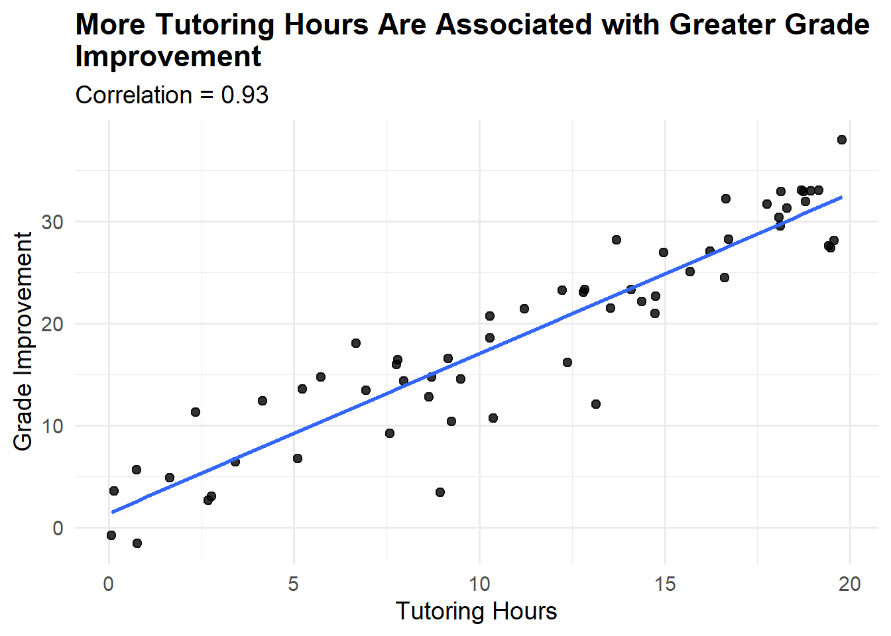
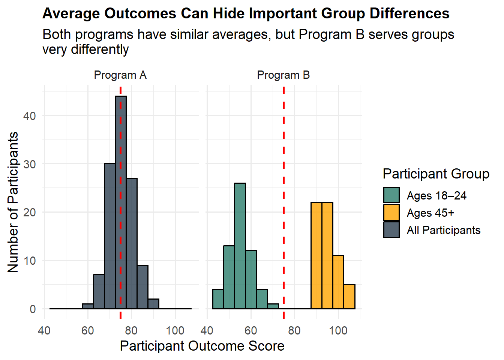

Understanding Your Data
Introduction
Many nonprofits often feel overwhelmed with managing and making sense of data. The good news is that working with data doesn’t require advanced statistical knowledge or expensive software. What matters most is to ask the right questions and developing a system to finding answers in your data.
This module will help you build confidence in working with your organization’s data. You’ll learn how to formulate meaningful questions that align with your mission, understand basic statistical concepts that reveal patterns in your work, and develop practical skills for interpreting what your data tells you about your programs. Whether you’re tracking client outcomes, volunteer hours, or program attendance, these foundational skills will help you transform raw numbers into actionable insights.
Starting with Questions, Not Numbers
It is easy to approach data analysis backwards. Opening a spreadsheet and you’re bombarded with columns of numbers, and wonder what you’re supposed to see. This approach often leads to frustration and missed insights. Instead, effective data analysis always begins with clear questions rooted in what you need to know.
Before you look at any number, consider what decision you’re trying to make or what you need to understand about your programs. Are you wondering whether your after-school program is reaching the families who need it most? Do you need to know if participants are showing improvement over time. Are you trying to determine which of your services are most effective? These questions should emerge from real programmatic needs, strategic planning processes, or reporting requirements.
Good questions have several key characteristics. They are specific enough to be answerable with the data you have or can reasonably collect. They connect directly to your organizations’ goals or the decisions you need to make. They often focus on comparisons, changes over time, or relationships between different factors. Rather than asking a vague question like, “How is our youth program doing?” you might ask, “Are youth who attend our program at least twice a week showing greater improvements in school attendance than those who attend once a week or less?” This more specific question tells you exactly what data you need to examine and what kind of analysis will be helpful.
For constructing sound analytical questions, following the SMART strategy:
Specific: Clearly defined so you know the exact data points to collect.
Measurable: It can be quantified and evaluated with the data you currently have or can realistically collect.
Actionable: The answer will directly drive decisions, change a process, or solve a specific problem.
Relevant: The question directly addresses a primary objective, goal, or core challenge.
Time-bound: It specifies a particular time-frame to focus you analysis, such as fiscal years, quarters, or months.
Fact vs Assumption
Before diving into your analysis, it’s important to question what you know and what you think you know. The SMART strategy is good for arriving at narrowed language to avoid ambiguity, but the questions asked represent what you’ve decided you don’t know the answers to and the questions you do not ask represent answers you believe you already know. As you work your way through the SMART strategy, it is worth while to ask yourself, “What assumption am I making with this question?”
These assumptions can manifest in different ways. Consider the list of examples below:
Outputs equal Outcomes: The assumption that counting the number of services provided (e.g., meals served, workshops held, or shelter beds filled) automatically equates to a positive change in a participant’s life.
The “Neutrality” of Numbers: Treating quantitative data (like test scores or survey metrics) as purely objective facts, ignoring systemic inequities or cultural biases built into the data collection process itself.
A “Standard” Participant Experience: The assumption that all clients have equal access to technology, time, and language proficiency to complete standard digital surveys or intake processes.
Let’s take the example research question, “Are youth who attend our program at least twice a week showing greater improvements in school attendance than those who attend once a week or less?” What assumptions is the team making? One assumption may be that the program overall is effective, and by asking this question, you want to know if it’s more impactful on those who frequent it often. Let’s say that’s true. Youth who attend twice a week show greater improvements in school compared to those who attend once per week. What does this improvement actually mean? Are their test scores better by 10 points or 2 points? More important, how do they compare to youth who do not attend the program? If outcomes of youth in the program are not cleanly differentiated from youth outside of the program, then this original question is moot.
Types of Questions Your Data Can Answer
Different questions require different types of analysis. Understanding which type of question you’re asking helps you choose the right approach.
Descriptive questions help you understand what’s happening in your programs right now. These include questions like
“How many clients did we serve last quarter?”
“What is the average age of program participants?”
“What percentage of workshop attendees completed the post-survey?”
Comparative questions help you understand differences between groups or time periods. You might ask:
“Do clients who receive case management services have higher housing stability rates than those who don’t?”
“How do our summer program outcomes compare to our school-year program outcomes?”
Trend questions focus on changes over time.
“Are we serving more families this year than last year?”
“Have client satisfaction scores improved since we implemented our new intake process?”
Relationship questions explore how different factors connect to each other.
“Does program attendance relate to outcome achievement?”
“Are participants with previous program experience more likely to complete the full program?”
Understanding Your Data Landscape
Before analyzing data, you need to understand what information you’re actually working with. Every nonprofit collects various types of data, from basic demographic information about the people you serve to detailed records of program activities and outcomes. Taking inventory of your data sources and understanding their strengths and limitations is a crucial first step.
Quantitative vs. Qualitative Data
Quantitative data consists of numbers that can be measured or counted: the number of clients served, ages of participants, attendance rates, test scores, or amounts donated. This type of data lends itself well to statistical analysis and can reveal patterns across large groups. You can calculate averages, track changes over time, and make comparisons between groups.
Qualitative data captures experiences, perspectives, and nuances that numbers alone cannot convey: participant testimonials, case notes from social workers, or open-ended survey responses. While this module focuses primarily on quantitative analysis, remember that the richest understanding often comes from combining both types of information. Numbers might tell you that 75% of clients completed your program, but interviews might reveal why the other 25% didn’t.
Common Data Quality Issues
You should also understand how your data was collected and any limitations this might create. Data collected through voluntary surveys may not represent your entire client population, since those who respond might differ systematically from those who don’t. People who had positive experiences may be more likely to complete feedback forms, or conversely, those with complaints may be more motivated to respond.
Attendance and participation records are only as accurate as the staff members recording them. If tracking systems are cumbersome or if staff are busy, records may be incomplete. Outcome measures may capture some dimensions of change while missing others. A standardized test might measure academic knowledge but not capture growth in confidence or motivation.
Being aware of these limitations doesn’t mean your data is useless, but it does mean you should interpret your findings with appropriate caution and look for ways to validate important insights through multiple sources. If your attendance data seems incomplete, you might cross-reference it with sign-in sheets or compare it to what staff members recall. If survey response rates are low, you might conduct a few follow-up phone interviews with non-respondents to see if their experiences differ.
| Data Quality Issue | What It Looks Like | What You Can Do |
|---|---|---|
| Missing data | Blank cells in your spreadsheet, incomplete surveys | Look for patterns in what’s missing; consider whether missing data is random or systematic |
| Inconsistent formats | Dates entered in different ways (3/15/24 vs March 15, 2024), inconsistent naming | Standardize formats moving forward; create data entry guidelines |
| Outliers | One value dramatically different from others (e.g., one person attended 200 sessions while most attended 5-10) | Verify outliers are accurate; consider whether they should be analyzed separately |
| Low response rates | Only 3% of clients completed the survey | Acknowledge limitations; try to understand if respondents differ from non-respondents. Response rates have been in decline for years. A 3-5% or even 10% response rate may be considered excellent depending on context and method |
Descriptive Statistics: Summarizing Your Data
Once you have a clear question and understand your data sources, you can begin examining your information systematically. Descriptive statistics are tools that help you summarize and describe what’s in your data. These basic measures form the foundation of nearly all data analysis and interpretation.
Measures of Central Tendency
These statistics tell you what’s “typical” or “central” in your data.
The mean (average) is calculated by adding up all values and dividing by the number of values. The mean is useful for understanding the typical value in your data. For instance, if you want to know the average age of program participants, the average number of sessions clients attend, or the average donation amount, the mean provides a single number that represents your entire dataset. However, the mean can be misleading when your data includes extreme values. If most clients attend between 5 and 10 sessions but a few attend 50 sessions, the mean will be pulled upward and might not represent the typical experience.
The median addresses this limitation by identifying the middle value when all your data points are arranged in order. Half of your values fall below the median and half fall above it. When your data includes outliers or is skewed in one direction, the median often provides a more accurate picture of what’s typical. In a dataset of household incomes where a few very high earners could distort the mean, the median gives you a better sense of the middle-ground experience.
The mode is simply the most frequently occurring value in your dataset. While less commonly used than the mean or median, the mode is particularly useful for categorical data. If you’re looking at the most common reason people seek your services, the most popular workshop topic, or the most frequent funding source, you’re identifying the mode.
Example: Understanding Session Attendance
Imagine you run a mentoring program and track how many sessions each participant attended over three months:
Participant sessions: 4, 5, 5, 6, 6, 6, 7, 7, 8, 8, 9, 45
Mean: 9.7 sessions (seems high!)
Median: 6.5 sessions (more representative of typical experience)
Mode: 6 sessions (most common attendance level)
In this case, one participant who attended 45 sessions (perhaps a peer mentor or someone with exceptional engagement) pulls the mean up significantly. The median and mode give you a better sense of what most participants experienced.
Measure of Spread
Understanding the typical value is important, but you also need to know how spread out your data is.
Range is the difference between your highest and lowest values, giving you a sense of the variability in your dataset. In the attendance example above, the range is 41 sessions (45 minus 4). A large range suggests substantial variation in participant experiences.
Percentiles help you understand distribution by dividing your data into segments. The 25th percentile (first quartile) is the value below which 25% of your data falls. The 75th percentile (third quartile) is the value below which 75% of your data falls. The gap between these percentiles tells you where the middle 50% of your data lies, which can be very informative. If the 25th percentile for program completion time is 3 months and the 75th percentile is 4 months, you know that half of participants complete the program in a fairly narrow timeframe. But if the 25th percentile is 2 months and the 75th percentile is 9 months, there’s much more variation in how long completion takes.
Standard deviation is a more sophisticated measure of spread that tells you, on average, how far individual values deviate from the mean. A small standard deviation means most values cluster close to the average, while a large standard deviation indicates wide variation. While calculating standard deviation requires a formula or software, understanding the concept helps you interpret variation in your data.
Looking beyond summary statistics to understand how your data is distributed can reveal important patterns. Are most of your values clustered around the average with few extreme cases, or is there wide variation? Are there distinct groups within your data? You might discover that your job training program serves two distinct populations with different age ranges and needs, which could inform how you structure your services.

Identifying Trends and Patterns Over Time
Many of the most important questions nonprofits ask involve change over time. Are we serving more people this year than last? Are participant outcomes improving? How have our funding sources shifted? Analyzing trends requires looking at data collected at multiple points and understanding what those changes might mean.
Creating and Reading Time Series
When examining trends, start by creating a simple time series of your data. This might be a table showing key metrics month by month or year by year, or ideally a line graph that makes patterns easier to see visually. Look for overall direction first. Is the trend generally moving up, down, or staying relatively stable?
Example: Monthly Donations

Looking at this data, you can see a general upward trend over the years, with individual months varying. The dips for the year typically occur during a summer month, possibly suggesting a seasonal pattern.
Recognizing Seasonal Patterns
Seasonal patterns and cycles often appear in nonprofit data. Youth programs may see higher attendance during after-school hours but lower participation during summer months when families travel or children attend camps. Food banks often experience increased demand during winter holidays and reduced donations during summer. Fundraising often spikes at the end of the calendar year for tax-related reasons.
Recognizing these regular patterns is important because it prevents you from mistaking predictable cycles for new trends. If attendance drops every summer, a decrease in June shouldn’t cause alarm, but an unusually large drop compared to previous summers would warrant investigation. To identify seasonal patterns, compare the same time periods across multiple years. If June is consistently your lowest attendance month, that’s a seasonal pattern. If June 2024 is much lower than June 2022 and 2023, that might indicate a new issue.
Making Fair Comparisons Across Time
When comparing across time periods, make sure you’re making fair comparisons. If your organization has grown significantly, comparing raw numbers from five years ago to today might be misleading. Instead, look at percentages or rates. Rather than just counting how many clients completed your program, calculate the completion rate by dividing completers by total enrollees. This allows you to compare program success across years even as your overall numbers change.
Consider whether your measurement methods have remained consistent. If you changed how you track attendance, modified your outcome surveys, or updated your database system, apparent trends might actually reflect changes in measurement rather than changes in reality. Document any changes to data collection methods and note them when interpreting trends.
Also think about external factors that might influence your data over time. Changes in the economy, new legislation, demographic shifts in your community, or emergence of competing programs can all affect your numbers. A decline in service utilization might reflect improved economic conditions in your community rather than problems with your program. An increase in client needs might reflect changes in eligibility requirements for government programs rather than changes in your effectiveness.
Making Meaningful Comparisons
Comparison is at the heart of most data questions. You’re rarely interested in a number in isolation; you want to know how it relates to something else. Is this outcome better than that one? Does one group differ from another? How do we compare to similar organizations?
Comparing Groups Within Your Data
When comparing groups within your data, start by clearly defining the groups you’re examining. You might compare outcomes for participants who received different program models, demographic groups, or people who entered your program at different times. Calculate the same descriptive statistics for each group and look for differences.
Visual recommendation: Create a comparison table template that nonprofits can adapt.
Example: Comparing Program Completion Rates by Age Group
| Age Group | Total Enrolled | Completed Program | Completion Rate |
|---|---|---|---|
| 18-24 | 45 | 32 | 71% |
| 25-34 | 62 | 51 | 82% |
| 35-44 | 38 | 33 | 87% |
| 45+ | 28 | 25 | 89% |
| Overall | 173 | 141 | 82% |
This table reveals that completion rates increase with age. While the overall completion rate is 82%, younger participants (18-24) complete at notably lower rates. This insight might prompt you to investigate why younger participants face more barriers to completion and whether additional supports could help.
When you observe differences between groups, consider both the size of the difference and the size of your groups. A difference of 15 percentage points between groups of 50 people each is more meaningful than the same difference between groups of 5 people each. With very small groups, a single person’s outcome can swing percentages dramatically.
Also consider whether differences might be explained by other factors. If you notice that participants in your morning program sessions have better outcomes than those in evening sessions, this might mean morning timing is better, or it might mean that people who can attend morning sessions differ in other ways (perhaps they have more flexible jobs, better childcare arrangements, or different levels of motivation). Looking at multiple characteristics simultaneously can help you understand whether apparent differences hold up when you account for other factors.
Benchmarking Against External Standards
Benchmarking against external standards or other organizations can provide valuable context for your data. If your job training program has a 70% job placement rate, is that good? It depends on many factors: the population you serve, the local economy, the types of jobs you’re targeting, and how other similar programs perform.
Seek out data from comparable programs through industry associations, research publications, or networks of similar organizations. Government agencies often publish data on program outcomes in various sectors. Funders sometimes share aggregate data across their grantees. When making external comparisons, be careful to account for differences in context, population served, and how metrics are defined and measured. A program serving individuals with significant barriers to employment should not expect the same job placement rates as one serving job-ready candidates.
Sometimes the best benchmark is your own past performance. If you served 500 families last year and set a goal to serve 600 this year, your past performance provides context for whether that goal is realistic and whether you’re on track to achieve it.
Comparing Actual Performance to Goals
Comparing your data to your goals or targets is another crucial form of analysis. Most nonprofits set goals in their strategic plans, grant proposals, or annual work plans. Regularly comparing actual performance to these targets helps you gauge progress and identify when you need to adjust either your strategies or your expectations.
Create a simple tracking table that shows your goal, your current performance, and the gap between them. This makes it immediately clear where you’re on track and where you’re falling short.
Example: Quarterly Goal Tracking
| Metric | Annual Goal | Q1 Actual | Q1 Target (25%) | Status |
|---|---|---|---|---|
| Clients served | 800 | 187 | 200 | Behind pace (94% of target) |
| Program completions | 600 | 156 | 150 | Ahead of pace (104% of target) |
| Volunteer hours | 5,000 | 1,410 | 1,250 | Ahead of pace (113% of target) |
| Workshop sessions delivered | 120 | 32 | 30 | On pace (107% of target) |
This table shows that while most metrics are on track, client recruitment is slightly behind pace. This early warning allows you to investigate barriers and adjust outreach strategies before the gap becomes larger. In this example, the clients served total is only 13 persons shy of the quarterly target. Depending on context, this may be nothing. If you are aware of seasonal patterns in your data and routinely serve much more than 200 clients in quarters 3 and 4, then being slightly below Q1’s target is not something to be concerned with.
If you’re consistently missing goals, it’s worth examining whether the goals were unrealistic, whether you’ve encountered unexpected obstacles, or whether your strategies need adjustment. Missing a goal isn’t failure if you learn from the analysis and make informed adjustments.
Understanding Relationships in Your Data
Beyond describing individual variables and comparing groups, you often want to understand whether different factors in your data relate to each other. Does attendance relate to outcomes? Do participants with certain characteristics tend to complete programs at higher rates? Understanding these relationships can help you identify what’s working and why.
Exploring Correlation
Correlation describes the relationship between two numerical variables. When two things are positively correlated, they tend to move in the same direction: as one increases, the other tends to increase as well. For example, you might find that the number of coaching sessions participants attend correlates positively with their employment outcomes. Negative correlation means variables move in opposite directions: as one increases, the other tends to decrease. You might find that the number of barriers clients face at intake correlates negatively with program completion (more barriers associated with lower completion).
You can explore correlation by creating a simple scatterplot with one variable on each axis, or by calculating a correlation coefficient (a number between -1 and 1 that indicates the strength and direction of the relationship). Many spreadsheet programs can calculate this for you.

However, a critical principle in data interpretation is that correlation does not prove causation. Just because two things move together doesn’t mean one causes the other. There might be a third factor (confounding variable) influencing both, or the relationship might be coincidental (also known as a spurious correlation). If you notice that participants who attend more frequently have better outcomes, this could mean attendance causes improvement, but it could also mean that people who are more motivated both attend more and improve more regardless of attendance. Or perhaps those with fewer competing obligations can both attend regularly and focus more effectively on their goals.
Understanding correlations is valuable for generating hypotheses about what matters in your programs, but testing those hypotheses rigorously often requires more careful program design, such as comparing groups who receive different levels of service while being otherwise similar, or tracking the same individuals before and after specific interventions.
Cross-Tabulation: Looking at Multiple Factors
Looking for patterns across multiple variables can reveal insights that single-variable analysis might miss. Cross-tabulation creates a table that shows how outcomes vary when you consider two or more characteristics simultaneously.
Example: Program Completion by Age and Education Level
| High School or Less | Some College | Bachelor’s+ | |
|---|---|---|---|
| 18-24 | 65% (13/20) | 75% (15/20) | 83% (5/6) |
| 25-34 | 78% (18/23) | 85% (22/26) | 92% (12/13) |
| 35+ | 82% (23/28) | 88% (22/25) | 95% (19/20) |
This cross-tabulation reveals several insights. First, both age and education level relate to completion rates, with older participants and those with more education completing at higher rates. Second, the relationship between education and completion is present across all age groups. Third, even among the youngest participants with the least education (the 65% completion group), nearly two-thirds complete successfully, suggesting the program works for diverse participants even if some groups face more challenges.
This type of analysis helps you identify which combinations of characteristics might indicate that participants need additional support, and which groups consistently succeed regardless of other factors.
Common Pitfalls and How to Avoid Them
Even experienced data analysts can fall into common traps that lead to misinterpretation. Being aware of these pitfalls will help you avoid them and interpret your data more accurately.
1. Over-Interpreting Small Numbers
One frequent mistake is over-interpreting small differences or focusing too much on outliers. With small sample sizes, a few unusual cases can create the appearance of patterns that don’t really exist. If you’re comparing outcomes for 10 participants in one program to 10 in another and the first group’s average is 3 points higher, this might simply reflect normal variation rather than a meaningful difference.
Rule of thumb: Be cautious about drawing strong conclusions from groups smaller than 30 people. Look for patterns that persist across larger numbers or multiple time periods before concluding they’re meaningful.
2. Confirmation Bias
Another pitfall is confirmation bias, where you unconsciously focus on data that confirms what you already believe while discounting information that challenges your assumptions. If you’re convinced that a particular program component is crucial, you might emphasize evidence supporting its importance while minimizing contradictory findings.
Strategies to counter this: Actively look for evidence that challenges your hypotheses. Invite colleagues who weren’t involved in program design to review your interpretations. Be transparent about findings that surprise or disappoint you. Ask yourself “What would the data look like if my assumption were wrong?” and genuinely look for that pattern.
3. Ignoring Distribution and Focusing Only on Averages
Focusing exclusively on averages while ignoring variation can lead to misleading conclusions. Your program might show strong average outcomes while actually serving two distinct groups very differently: one group thriving and another struggling. Understanding the distribution of outcomes, not just the average, reveals these patterns.
Similarly, aggregate data can hide important disparities. Overall program completion rates might look good while specific demographic groups face significant barriers. Breaking down your data by relevant characteristics helps ensure you’re not missing important inequities or opportunities for improvement.

4. Mistaking Available Data for Important Data
Finally, mistaking available data for relevant data is a common trap. Just because you can easily measure something doesn’t mean it’s what you should be measuring. Outputs like the number of workshops delivered or people served are easier to track than outcomes like changes in knowledge, behavior, or life circumstances, but outcomes are usually what matter most for understanding your impact.
While you should use the data you have and work with what’s practical to collect, also critically consider whether you’re measuring what truly matters. If your data shows high attendance but you’re not tracking whether participants are gaining skills or achieving their goals, you’re only seeing part of the picture.
Putting It All Together: A Practical Workflow
Effective data analysis in a nonprofit context isn’t about sophisticated statistical techniques or expensive software. It’s about approaching your data systematically with clear questions and an open mind. Here’s a practical workflow you can apply to most data questions you’ll encounter.
Step 1: Define Your Question
Begin every analysis by articulating what you need to know and why. Write down your question explicitly, and clarify what a useful answer would look like. This might seem like unnecessary formality, but it focuses your analysis and helps you recognize when you’ve found an answer.
NoteTip
Go beyond asking Yes/No questions. In doing so, you open yourself up to a deeper level of analysis.
Vague question: “How are we doing with our literacy program?”
Better question: “To what degree is our program impacting our students’ reading levels? Specifically, what percentage are advancing at least one grade level over a six-month period?”
Step 2: Identify Relevant Data
Identify what data you have or can collect that might address your question. Be honest about any limitations in that data. Do you have complete records or are some missing? Are you measuring exactly what you want to know or a proxy for it? How recent is the data?
For the literacy question above, you’d need reading assessment scores at program entry and six months later. If you only have scores for some students, acknowledge that limitation. If your assessments measure decoding skills but not comprehension, note that distinction.
Step 3: Summarize and Visualize
Calculate appropriate descriptive statistics that help characterize your data. Create simple tables or charts that let you see patterns visually. For the literacy program, you might calculate:
The percentage of students who advanced at least one grade level
The average improvement across all students
The range of improvement (from students who declined to those who advanced most)
Completion broken down by factors like attendance or initial reading level
A simple bar chart showing the percentage of students in each category (declined, no change, improved 1 level, improved 2+ levels) makes the pattern immediately clear.
Step 4: Interpret in Context
Consider what the patterns mean given what you know about your program, your students, and the educational research in this area. What explanations might account for what you’re seeing? If 65% of students advanced at least one grade level, is that strong performance? It depends on factors like how intensive your program is, how far behind students were when they started, what gains similar programs achieve, and what’s typical for students’ natural development.
What do you know from your programmatic experience that helps make sense of the numbers? Perhaps teachers have noticed that students who attend regularly make steady progress. Do the numbers confirm that observation? Are there patterns in the data that surprise experienced staff members? Those surprises often point to important insights worth exploring further.
Step 5: Draw Conclusions and Identify Next Steps
What does this analysis tell you about your programs? Based on the literacy data, you might conclude that your program is effectively helping most students advance, but a meaningful minority aren’t making expected progress. What decisions might this inform? Perhaps you need to investigate why some students aren’t advancing and whether they need different supports. Maybe you want to examine whether attendance patterns or initial reading levels predict who advances most.
What new questions has this analysis raised? You might now wonder whether the students who didn’t advance have something in common, whether improvement persists after students leave the program, or whether certain tutoring approaches work better than others.
Moving Forward: Building a Data-Informed Culture
Understanding your data is a skill that develops with practice. You don’t need to become a statistician or data scientist to work effectively with your organization’s information. What you do need is curiosity, a willingness to engage with numbers systematically, and the judgment to interpret findings in light of your programmatic knowledge and mission.
Start Small and Build
Choose one straightforward question about your programs and work through the process of finding and interpreting relevant data. Perhaps start with something descriptive, like understanding the demographic characteristics of the people you serve or tracking participation rates over the past year. Share your findings with colleagues and discuss what they might mean. As you become more comfortable with basic analysis, you can tackle more complex questions and more sophisticated techniques.
Create simple templates for common analyses you’ll repeat regularly. A spreadsheet template for tracking monthly service numbers with automatic calculation of totals and averages saves time and ensures consistency. A standard format for comparing quarterly performance to goals makes it easy to spot trends and share updates with your board or funders.
Make Data Part of Regular Conversations
Schedule regular time for data review in team meetings. This doesn’t need to be formal or lengthy. Spending fifteen minutes each month reviewing key metrics helps everyone stay connected to your organization’s progress and normalizes data as a tool for learning rather than judgment. When staff members see data used to improve programs rather than criticize people, they become more engaged with collection and analysis.
Encourage questions and curiosity about your data. When someone wonders aloud whether a new outreach approach is working or which workshop topics participants find most valuable, treat that as an opportunity for inquiry. “That’s a great question – let’s look at the data and see what we can learn” builds a culture where evidence informs decisions.
Balance Data with Other Ways of Knowing
Remember that data is a tool for understanding and improving your work, not an end in itself. The goal is never to produce impressive statistics or complex analyses. The goal is to better serve your mission by understanding your programs more clearly, identifying opportunities for improvement, and demonstrating your impact to stakeholders.
Numbers provide one type of insight, but they should be combined with the qualitative understanding that comes from direct service delivery, participant feedback, staff expertise, and community knowledge. The literacy program data might show that students are advancing, but conversations with students and families reveal that growing confidence and enjoyment of reading are equally important outcomes that standardized assessments don’t fully capture.
When quantitative and qualitative insights align, you can have strong confidence in your conclusions. When they diverge, that’s a signal to dig deeper and understand why different evidence sources are telling different stories. Perhaps the numbers show high program completion rates while exit interviews reveal that many completers didn’t feel they achieved their goals, suggesting that completion alone isn’t an adequate measure of success.
Invest in Your Data Infrastructure
While you don’t need expensive software to start working with data, some investment in your data systems pays dividends over time. This might mean adopting a simple client database that tracks participation and outcomes consistently, creating standardized data entry forms that reduce errors, or providing training so more staff members can conduct basic analyses.
Document how you collect and define your data. A simple data dictionary that explains what each field means, how it should be recorded, and any relevant coding categories helps ensure consistency. When staff turnover occurs, good documentation prevents loss of institutional knowledge about your data systems.
Regularly review what data you’re collecting and why. If you’re gathering information you never use, consider whether it’s worth the staff time to collect it. If you regularly wish you had data you don’t collect, think about feasible ways to add that information. Your data collection should evolve as your programs and information needs change.
Conclusion
Your data contains stories about the people you serve, the challenges they face, and the changes your programs help create. Learning to read those stories through systematic analysis enables you to do your most important work more effectively. The numbers matter not for their own sake, but because they represent real people, real needs, and real opportunities to make a difference.
The skills covered in this module – asking focused questions, understanding basic statistics, identifying patterns and trends, making fair comparisons, and interpreting findings thoughtfully – form a foundation you can build on throughout your career in the nonprofit sector. You don’t need to master everything at once. Start with simple questions and basic analyses. Share what you learn. Ask for help when you need it. Over time, working with data will become a natural part of how you understand and improve your programs.
Approaching your data with both analytical rigor and human understanding will help you translate information into insight and insight into action. Each time you examine your data with a clear question in mind, you’re taking a step toward being more effective in your mission. That combination of curiosity, systematic thinking, and commitment to your community is what transforms numbers on a page into knowledge that changes lives.
Need Help? If you have questions or would like personalized guidance on implementing these practices in your organization, please contact me.